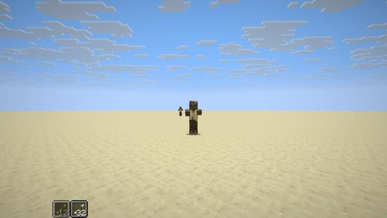
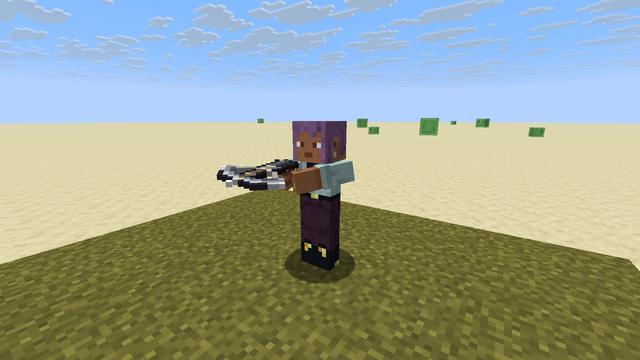
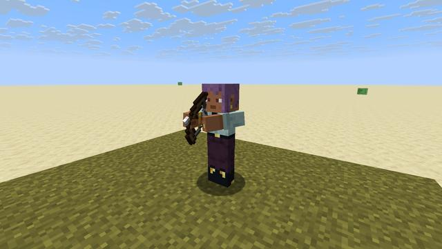
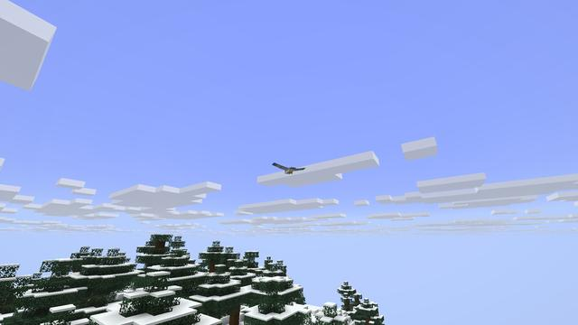

Screenshots
Showcase
Taken in game, with no shaders or texture packs.
 A Ranger's Watchtower in the old pines at sunset
A Ranger's Watchtower in the old pines at sunset The Marksman keeping watch on its battlements
The Marksman keeping watch on its battlements The watchtower over the taiga at dusk
The watchtower over the taiga at dusk A Rope Arrow's rope down the watchtower's wall
A Rope Arrow's rope down the watchtower's wall A Gale Harrier wheeling over the peaks
A Gale Harrier wheeling over the peaks A Bog Lurker's eyes in the swamp at nightfall
A Bog Lurker's eyes in the swamp at nightfall A Shieldbearer and two pillagers by their outpost
A Shieldbearer and two pillagers by their outpost A Flare Arrow's light, and the zombies about it glowing
A Flare Arrow's light, and the zombies about it glowing The ring glowing gold: let go now for a Perfect Release
The ring glowing gold: let go now for a Perfect Release A headshot, and the red tick that marks it
A headshot, and the red tick that marks it The distance of a long shot on the action bar
The distance of a long shot on the action bar

The Quiver strip beside the hotbar: the arrow your bow draws next The Fletching Table: glowstone, a stick, a feather and a Harrier Feather make Flare Arrows
The Fletching Table: glowstone, a stick, a feather and a Harrier Feather make Flare Arrows The table says what the nearest arrow still needs
The table says what the nearest arrow still needs A fletcher selling the new arrows beside the old trades
A fletcher selling the new arrows beside the old trades

The Arbalest, loaded

The Longbow at full draw

Harrier country: the windswept peaks